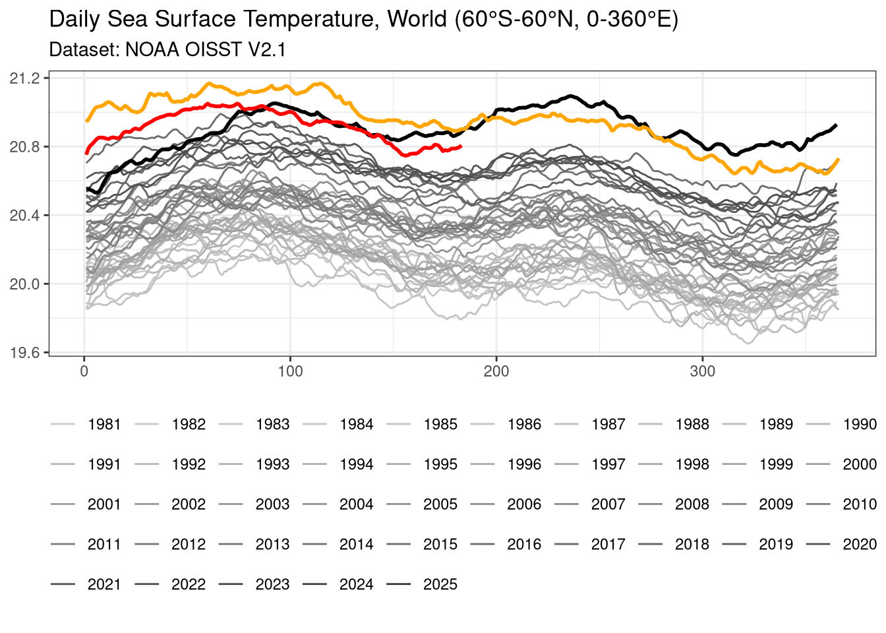
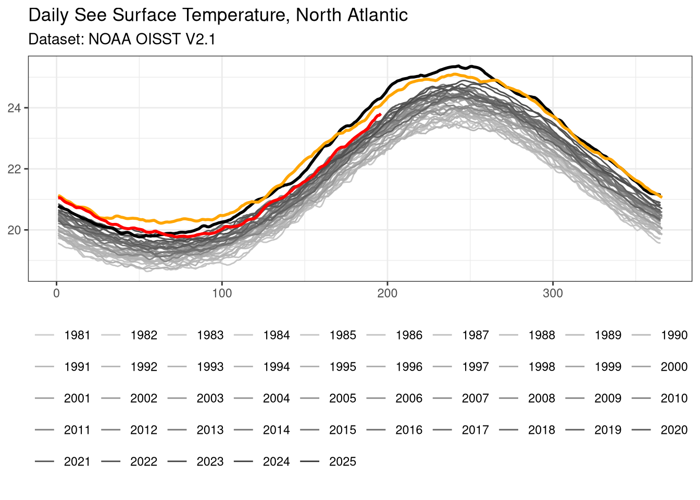
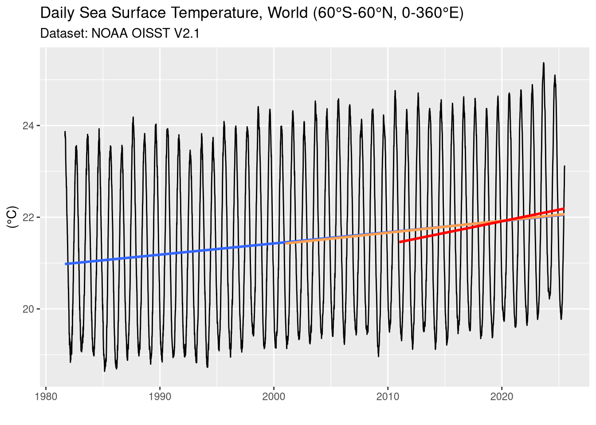
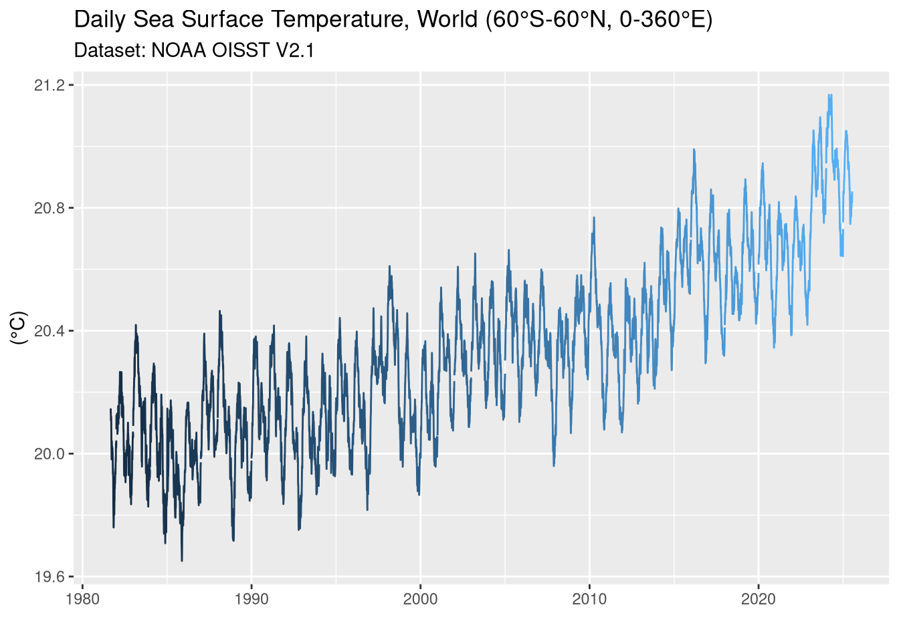

libs <- c(
"ncdf4",
"tidyverse",
"data.table",
"jsonlite",
"tictoc",
"fpp3",
"stringi"
)
#install missing libraries
installed_libs <- libs %in% rownames(installed.packages())
if (any(installed_libs == FALSE)) {
install.packages(libs[!installed_libs])
}
#load libraries
invisible(lapply(libs, library, character.only = TRUE))4 Données temporelles
4.1 chargement librairies utiles
4.2 fonctions de base (peut-être disponibles dans lubridate)
4.3 weights to apply to square of 0.25°x0.25° along the latitude
area_weights <- fread(file = "data/area_weights.csv", dec = ",") |> pull( w )4.4 fonctions de calcul de moyenne pondérée
Le principe consiste à détecter un fichier de moyenne (fichier RDS) déjà présent ou pas.
Si ce dernier est présent il est lu et complété.
Dans le cas contraire la constition de ce fichier est réalisée à partir de tous les fichiers NetCDF contenus dans le répertoire data/raw.
Si le fichier pris en compte est un fichier temporaire (suffixe _preliminary) on attribuera à la donnée un status_ok de valeur \(FALSE\)
Si le fichier pris en compte est un fichier finalisé status_okvaudra \(TRUE\)
# get weighted mean of one variable between longitude and latitude ranges
get_weighted_mean <- function(file, var, lon_min, lon_max, lat_min, lat_max) {
status_ok <- if_else(str_detect(file, '_preliminary'), FALSE, TRUE)
nc <- nc_open(file)
lon <- ncvar_get(nc, varid = "lon")
lat <- ncvar_get(nc, varid = "lat")
time <- ncvar_get(nc, varid = "time")
var <- ncvar_get(nc, varid = var)
nc_close(nc)
w <- matrix(rep(area_weights, 1440), ncol = 720, byrow = TRUE)
x_min <- min(which(lon >= lon_min))
x_max <- max(which(lon <= lon_max))
y_min <- min(which(lat >= lat_min))
y_max <- max(which(lat <= lat_max))
wm_var <- weighted.mean(
var[x_min:x_max, y_min:y_max],
w[x_min:x_max, y_min:y_max],
na.rm = TRUE
)
c(time, wm_var, status_ok)
}# var : 'sst', 'anom' or 'ice
# geo_data : list (RDS_name, bbox)
get_all_weighted_mean <- function(var, geo_data) {
files <- list.files(path = "data/raw", pattern = "*.nc", full.names = TRUE)
if (length(files) > 0 ) {
lon_min <- geo_data$bbox["lon_min"]
lon_max <- geo_data$bbox["lon_max"]
lat_min <- geo_data$bbox["lat_min"]
lat_max <- geo_data$bbox["lat_max"]
RDS_file <- paste0('wm_', var, '_', geo_data$RDS_name, '.RDS')
RDS_file_path <- paste("data", RDS_file, sep = '/')
if (file.exists(RDS_file_path)) {
# les données relatives aux fichiers _preliminary sont supprimées
RDS_data <- readRDS(RDS_file_path) |>
dplyr::filter(status_ok)
saveRDS(RDS_data, RDS_file_path)
finalized_files_processed <- RDS_data |>
pull(date) |>
yyyymmdd() |>
vapply(\(x) paste0('data/raw/oisst-avhrr-v02r01.', x, '.nc'), character(1))
files_to_process <- files[!(files %in% finalized_files_processed)]
} else {
files_to_process <- files
}
origin_date <- ymd("1978-01-01")
wm_matrix <- matrix(numeric(0), nrow = length(files_to_process), ncol = 3)
colnames(wm_matrix) <- c('time', 'wm', 'status_ok')
for (i in seq_along(files_to_process)) {
result <- get_weighted_mean(files_to_process[i], var, lon_min, lon_max, lat_min, lat_max)
wm_matrix[i, 1] <- result[1] # time in days from origin date
wm_matrix[i, 2] <- result[2] # weighted mean
wm_matrix[i, 3] <- result[3] # status
}
df_wm_var <- as_tibble(wm_matrix) |>
set_names('time', paste0('wm_', var), 'status_ok') |>
mutate(
date = lubridate::as_date(time, origin = origin_date),
status_ok = as.logical(status_ok)
)
if (file.exists(RDS_file_path)) {
RDS_data <- rbind(RDS_data, df_wm_var)
} else {
RDS_data <- df_wm_var
}
saveRDS(RDS_data, RDS_file_path)
RDS_data
} else {
message("aucun fichier de données à traiter")
}
}4.5 calcul des moyennes pondérées pour le monde (60°S-60°N)
Les moyennes pondérées sont calculées consécutivement sur les variables sst, anom, et ice.
# get weighted mean var with -60 < latitude < 60
geo_world <- list(
RDS_name = "world",
bbox = c(lon_min = 0, lon_max = 360, lat_min = -60, lat_max = 60)
)
df_wm_sst_world <- get_all_weighted_mean("sst", geo_world)
df_wm_anom_world <- get_all_weighted_mean("anom", geo_world)
df_wm_ice_world <- get_all_weighted_mean("ice", geo_world) # à corriger !!!4.6 calcul des moyennes pondérées pour l’Atlantique Nord (0-60°N, 0-80W)
Les mêmes variables que précédemment sont prises en compte.
geo_north_atlantic <- list(
RDS_name = "north_atlantic",
bbox = c(lon_min = 280, lon_max = 360, lat_min = 0, lat_max = 60)
)
df_wm_sst_north_atlantic <- get_all_weighted_mean("sst", geo_north_atlantic)
df_wm_anom_north_atlantic <- get_all_weighted_mean("anom", geo_north_atlantic)
df_wm_ice_north_atlantic <- get_all_weighted_mean("ice", geo_north_atlantic)4.7 Impression de la série temporelle
- température de l’eau entre les latitudes 60°S et 60°N
df_wm_sst <- readRDS('data/wm_sst_world.RDS') |>
mutate(
year = year(date),
yday = yday(date),
month = month(date)
)
ggplot(data = df_wm_sst,
aes(x = yday, y = wm_sst, group = year)) +
geom_line(aes(color = factor(year))) +
scale_color_grey(start = 0.8, end = 0.2) +
geom_line(
data = df_wm_sst |> filter(year == 2023),
aes(x = yday, y = wm_sst),
color = "black",
linewidth = 1) +
geom_line(
data = df_wm_sst |> filter(year == 2024),
aes(x = yday, y = wm_sst, group = year),
color = "orange",
linewidth = 1) +
geom_line(
data = df_wm_sst |> filter(year == 2025),
aes(x = yday, y = wm_sst, group = year),
color = "red",
linewidth = 1) +
labs(
title = "Daily Sea Surface Temperature, World (60°S-60°N, 0-360°E)",
subtitle = "Dataset: NOAA OISST V2.1",
caption = '',
color = NULL,
x = NULL,
y = NULL
) -> p
p +
theme_bw() +
theme(
legend.position = "bottom",
plot.caption = element_text(margin = margin(t = 0, unit = 'cm')),
legend.spacing.x = unit(0.5, 'cm'),
legend.key = element_blank(),
legend.text = element_text(colour = 'black'),
) +
guides(
color = guide_legend(
ncol = 10,
byrow = TRUE,
reverse = FALSE,
label = TRUE,
#label.hjust = 1,
#keywidth = unit(0.8, 'cm'),
label.position = "right",
x.intersp = 0.2,
text.width = 0.045
)
) 
- température de l’eau en Atlantique Nord
df_wm_sst <- readRDS('data/wm_sst_north_atlantic.RDS') |>
mutate(
year = year(date),
yday = yday(date),
month = month(date)
)
ggplot(data = df_wm_sst,
aes(x = yday, y = wm_sst, group = year)) +
geom_line(aes(color = factor(year))) +
scale_color_grey(start = 0.8, end = 0.2) +
geom_line(
data = df_wm_sst |> filter(year == 2023),
aes(x = yday, y = wm_sst),
color = "black",
linewidth = 1) +
geom_line(
data = df_wm_sst |> filter(year == 2024),
aes(x = yday, y = wm_sst, group = year),
color = "orange",
linewidth = 1) +
geom_line(
data = df_wm_sst |> filter(year == 2025),
aes(x = yday, y = wm_sst, group = year),
color = "red",
linewidth = 1) +
labs(
title = "Daily See Surface Temperature, North Atlantic",
subtitle = "Dataset: NOAA OISST V2.1",
caption = '',
color = NULL,
x = NULL,
y = NULL
) -> p
p +
theme_bw() +
theme(
legend.position = "bottom",
plot.caption = element_text(margin = margin(t = 0, unit = 'cm')),
legend.spacing.x = unit(0.5, 'cm'),
legend.key = element_blank(),
legend.text = element_text(colour = 'black'),
) +
guides(
color = guide_legend(
ncol = 10,
byrow = TRUE,
reverse = FALSE,
label = TRUE,
#label.hjust = 1,
#keywidth = unit(0.8, 'cm'),
label.position = "right",
x.intersp = 0.2,
text.width = 0.045
)
) 
4.8 impression supplémentaire 1
ggplot(data = df_wm_sst,
aes(x = date, y = wm_sst)) +
geom_line() +
geom_smooth(
method = "lm",
se = FALSE
) +
geom_smooth(
data = df_wm_sst |>
filter(year > 2000),
method = "lm",
se = FALSE, colour = "#FFA050"
) +
geom_smooth(
data = df_wm_sst |>
filter(year > 2010),
method = "lm",
se = FALSE, colour = "#FF0000"
) +
labs(
title = "Daily Sea Surface Temperature, World (60°S-60°N, 0-360°E)",
subtitle = "Dataset: NOAA OISST V2.1",
caption = '',
color = NULL,
x = NULL,
y = "(°C)"
)`geom_smooth()` using formula = 'y ~ x'
`geom_smooth()` using formula = 'y ~ x'
`geom_smooth()` using formula = 'y ~ x'
4.9 impression supplémentaire 2
df_wm_sst <- readRDS("data/wm_sst_world.RDS") |>
mutate(year = year(date))
ggplot(data = df_wm_sst) +
geom_line(aes(x = date, y = wm_sst, group = year, color = year),
show.legend = FALSE) +
labs(
title = "Daily Sea Surface Temperature, World (60°S-60°N, 0-360°E)",
subtitle = "Dataset: NOAA OISST V2.1",
caption = '',
color = NULL,
x = NULL,
y = "(°C)"
)